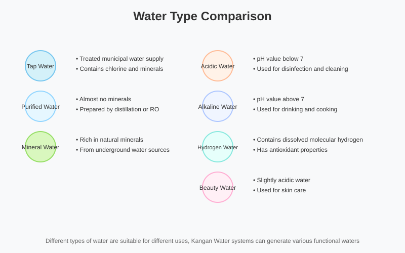

Discover the variety of functional waters produced by Enagic machines.
Enagic machines generate various types of water with different pH levels through electrolysis, satisfying needs for drinking, cooking, cleaning, and beauty.

Enagic machines produce versatile water types for every need.
Treated municipal water, usually containing chlorine and various minerals.
Enagic machines filter out chlorine and harmful substances while retaining beneficial minerals.
Water treated via distillation or reverse osmosis, lacking minerals.
Kangen Water retains beneficial minerals and offers alkaline and antioxidant properties.
Generated for powerful sanitization and disinfection.
Sanitizing kitchenware, surfaces, and removing pesticides from produce.
The core Kangen Water for drinking, with high alkalinity and antioxidants.
Daily drinking, cooking, coffee/tea, and plant care.
Slightly acidic water matching the skin's natural pH.
Face wash, toning, hair care, and pet grooming.
Filtered water with pH 7.0, free of chlorine.
Taking medication and preparing baby formula.